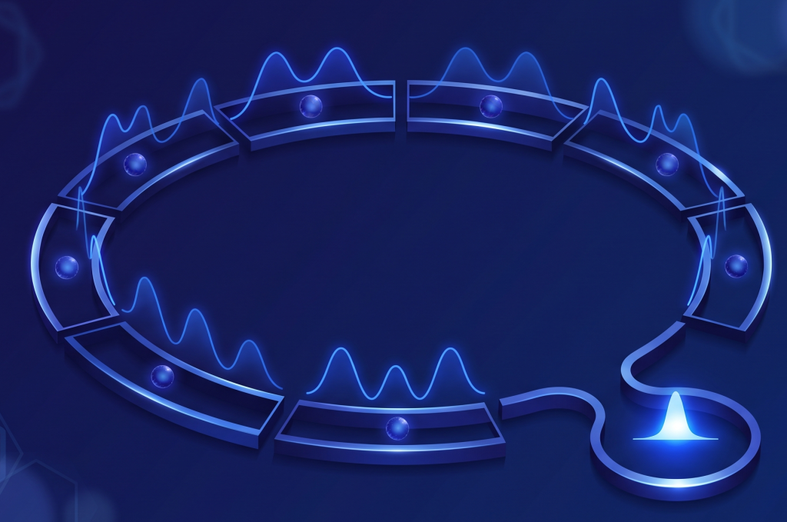
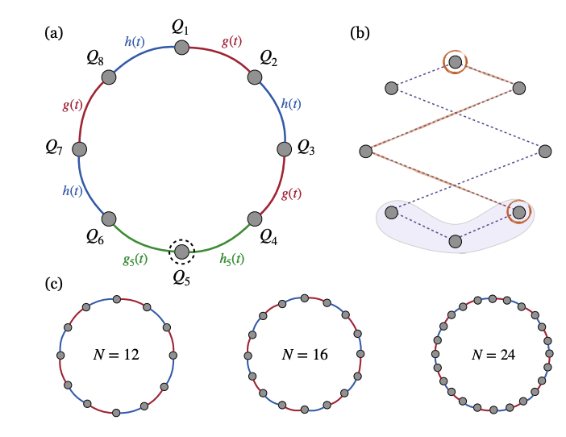
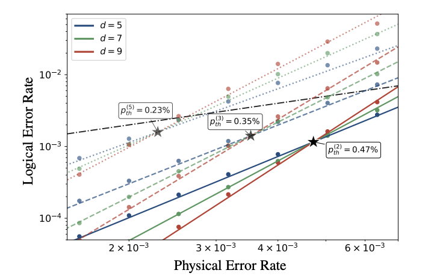

quantum computing • global control • iSWAP • cyclic codes
New globally controlled architectures based on iSWAPs with quantum error correction
August 10th, 2026

A few weeks ago I mentioned that we had some exciting news coming from Planckian that I would have shared soon. Well, the news is out! Our paper Quantum error correction with global control is now on the arXiv. This is a joint work with Roberto Menta, Lindsay Bassman Oftelie, Ashkan Abedi, Francesco Cioni, Marco Polini, Seth Lloyd, and Vittorio Giovannetti.
There is a slightly paradoxical problem hiding inside the effort to build larger quantum computers. We want more qubits, because error correction requires many physical qubits for every logical one. But every time we add another qubit, we also tend to add more wires, more control electronics, more calibration parameters, more heat reaching the cryogenic stages, and more opportunities for the machine to become difficult to operate. For quantum computers to scale, we need to scale the control hardware as well as obtaining a sizeable quantum state. I have discussed on this blog in the past the idea of global control here, in which a small number of control fields act on many qubits at once. That approach was based on always-on interactions inducing a transport of quantum information around the device. That however had a cost, e.g. an overhead in terms of auxiliary qubits necessary to perform these operations. The advantage was the theoretically massive reduction in wiring. Most companies, also, have moved away from always-on interactions, and instead use pulsed interactions. In our recent work, we show that it is possible to design a globally controlled architecture that does not require any auxiliary qubits for the control mechanism itself, while still supporting quantum error correction. Planckian has a short blog post here here.
In our recent work, Quantum error correction with global control, we explore a rather different architecture. Instead of giving every qubit its own collection of control lines, we arrange the qubits on a ring and manipulate many of them simultaneously. The trick is that the global dynamics itself transports quantum information around the device. To the best of our knowledge, this is the first time this was shown to be possible even in principle.
This leads to a globally controlled quantum computer with no auxiliary qubits required merely to make the global-control mechanism work. Even more importantly, its dynamics turns out to fit naturally with a family of cyclic quantum error-correcting codes. The same symmetry that makes the hardware simple is also what lets us perform most of the error correction globally.
- 1. The wiring problem
- 2. Put the qubits on a ring
- 3. Moving information with iSWAPs
- 4. One local control region is enough
- 5. Why cyclic codes fit the machine
- 6. The remaining bottleneck: measurement
- 7. What happens to the error-correction threshold?
- 8. From the model to hardware
- 9. The broader point
1. The wiring problem
Local control is an extraordinarily useful abstraction. If I want to rotate qubit number 137, I send a pulse to qubit number 137. If I want to couple qubits 137 and 138, I activate their interaction. From the perspective of an algorithm, this is exactly what one would like.
Physically, however, local addressability is expensive. In a superconducting processor, qubits require control and readout infrastructure. As the processor grows, this produces increasingly complicated wiring, calibration and chip-layout constraints. At the same time, all those lines have to enter a cryogenic environment in which thermal load is a precious resource.
This is usually called the wiring problem. And it becomes especially uncomfortable when thinking about fault tolerance, because error correction asks us to increase the number of physical qubits by orders of magnitude.
Global control offers an appealing alternative: instead of addressing every qubit independently, one applies a small number of control fields to many qubits at once.
But historically there has been a price to pay. Globally controlled architectures generally need additional structure to distinguish one part of the processor from another: different qubit species, pointers, buffers, patterned frequencies, or auxiliary qubits used to move and address quantum information.
This becomes particularly problematic once error correction enters the story. The computational qubits must be protected, but so must the auxiliary infrastructure on which the computation depends. Earlier proposals therefore considered separate and interleaved correction procedures for computational and auxiliary qubits.
At that point some of the simplicity promised by global control has disappeared.
2. Put the qubits on a ring
Our starting point is deliberately simple, as it shows that in principle one can achieve universal quantum computation with global control with simple architectures. Take an even number $N$ of qubits and arrange them on a closed ring. Neighboring qubits interact through an XY exchange interaction, that however can be activated at will (pulsed) on either the even or odd bonds of the ring. The Hamiltonian is therefore
Now divide the bonds of the ring into two alternating sets. Think of them as the red bonds and blue bonds in Fig. 1 of the paper. One global control, which we call $g(t)$, acts on one set; another, $h(t)$, acts on the other.
At one moment we activate every other bond. At the next moment we activate the complementary set. So instead of individually commanding hundreds of pairwise interactions, the processor repeatedly executes two globally defined layers.
There is only one special region. At a single site of the ring we retain local control: we can drive the qubit there individually and control the two interactions connecting it to its neighbors.
This one locally addressable region is the symmetry-breaking ingredient that eventually gives us universal quantum computation. Everywhere else, the machine remains global.
The important scaling observation is that the control structure does not grow with $N$. Making the ring larger adds qubits, but does not require us to add a new independent control channel for every new site.
And unlike earlier global-control constructions, we do not need buffer or pointer qubits just to implement the addressing mechanism. The qubits on the ring are the qubits carrying the computation.
An alternative approach is to bring the qubits, via the universal routing theorem we proved, to a certain area of the chip, and then activate local iSWAP, compile into SWAP, and then perform two qubits gates there. The advantage is that now we have a single local control region, and we can perform arbitrary single qubit gates there, at the cost of a handful of lines into the device. As a principle, one can divide then global control into global routing + local control. Global routing control' and compilation scales with the number of computational qubits, so in that region the architecture is key. However, you saved on the number of wires dramatically. The local control region can be used to perform arbitrary single qubit gates, and two qubit gates, and then the qubits can be routed back to their original position. This is how one achieves universality. With a modified architecture one can achieve also all-to-all effective connectivity.

3. Moving information with iSWAPs
Of course, having only one locally controlled site sounds rather restrictive. What if the state I want to manipulate is sitting on the opposite side of the ring?
This is where the exchange interaction becomes useful.
If two resonant qubits interact through the XY Hamiltonian for the appropriate time, the resulting operation is an iSWAP. In our convention, choosing
generates the iSWAP gate. An iSWAP exchanges the single-excitation components of two neighboring qubits, but also introduces phases. If our goal is simply to transport an arbitrary quantum state from one site to the next, we would rather have a conventional SWAP.
One possibility we discuss is to synthesize that SWAP using three iSWAP gates and global $\sqrt{X}$ rotations:
The key word here is global. These operations can be executed simultaneously on all the appropriate pairs of the ring.
Alternating the two SWAP layers produces a very simple transport dynamics. States on one parity sublattice move around the ring in one direction while states on the other parity sublattice move in the opposite direction. Repeating these layers lets us bring any chosen quantum state to the locally controlled site.
A useful mental picture is a conveyor belt. The expensive equipment stays in one place; the object that needs to be worked on is transported to it.
Here, of course, what moves is not a physical qubit. What moves is the quantum information stored in it.
4. One local control region is enough
Once we can route an arbitrary state to the special site, single-qubit operations are straightforward. We transport the target state there, switch off the global interactions, and apply a resonant local drive. This gives arbitrary rotations of that qubit.
Two-qubit gates are obtained in a similar spirit. The locally controlled links adjacent to the special site can generate an iSWAP between qubits brought into the control region.
Arbitrary single-qubit gates together with an entangling gate such as iSWAP already form a universal gate set. The remaining question is therefore purely one of routing: can the global dynamics bring the necessary qubits into the region in which these gates are available?
The answer is yes.
One way of seeing this is through the effective connectivity graph in Fig. 1(b) of the paper. Its vertices represent computational qubits, and an edge connects two qubits if the global transport dynamics can bring them simultaneously into the locally controlled region. For the simple ring this graph is connected.
It is not all-to-all connected: some two-qubit gates have to be compiled through a sequence of intermediate interactions. But connectedness is enough for universality. In the Supplemental Material we make the routing argument constructive and show explicitly that an arbitrary qubit can be transported to an arbitrary target site with a worst-case cost that scales as $O(N)$ global pulses.
So a device with predominantly global controls is not merely a quantum memory or a special-purpose simulator. It can execute arbitrary quantum computations.
5. Why cyclic codes fit the machine
Universal computation is only part of the story. The real motivation for reducing control complexity is fault tolerance, and that means quantum error correction. In our paper we show that our scheme is at least sufficient, for a single logical qubit, for a quantum memory experiment.
Even in this case, there is an immediate difficulty. Standard syndrome-extraction circuits contain many operations distributed across a processor. If every one of those operations had to be performed by transporting a qubit to our single local-control site, error correction would become hopelessly serial. While one syndrome was being processed, errors would continue accumulating elsewhere.
So instead of asking how to force an arbitrary error-correcting code onto the architecture, we ask a more useful question: which error-correcting code naturally has the same symmetry as the hardware?
This leads us to cyclic stabilizer codes.
We consider a family of non-CSS $[[n,1,d]]$ cyclic codes. The stabilizer generators are obtained by translating a base stabilizer cyclically around the register. For the family studied in the paper, the number of data qubits scales as
for odd code distance $d$.
The important property for us is not merely that the code is drawn on a circle. It is that its syndrome-extraction circuit consists of translation-invariant operations that can be carried out in parallel around that circle.
Data and syndrome qubits are placed in an alternating pattern. At each stage of syndrome extraction, identical two-qubit gates act on disjoint neighboring pairs, followed by the complementary set of pairs. This is exactly what our two global interaction layers already know how to do.
The syndrome qubits effectively move around the ring, interacting in turn with the data qubits necessary to build each stabilizer. The computation of the syndrome can therefore be performed using global iSWAPs and global single-qubit rotations, rather than a long sequence of individually addressed gates.
This is really the central co-design idea of the work: the hardware symmetry and the code symmetry are chosen so that they reinforce one another.
6. The remaining bottleneck: measurement
There is, however, one thing the global gates cannot eliminate: measurement.
After the stabilizer information has been accumulated into the syndrome qubits, those qubits have to be read out. In the minimal architecture we do not assume a dedicated local measurement line on every site.
Instead, the same transport dynamics comes to the rescue once more. Syndrome states are moved around the ring until they reach a site with local readout. They are measured and reset, the ring moves again, and the next syndrome states arrive.
If there is only one measurement site, this works in principle, but the measurement procedure becomes long. We therefore introduce $\ell$ measurement sites distributed around the ring.
If $n_s$ syndromes must be measured, the number of measurement rounds is
This exposes a useful architectural knob.
At one extreme, we use very little local wiring and accept more serial measurement rounds. At the other, we install more readout sites and recover more parallelism.
Rather than claiming that global control makes wiring disappear, the architecture makes the trade-off explicit: how much local measurement hardware are we willing to buy in exchange for faster error correction?
7. What happens to the error-correction threshold?
We then simulate the cyclic code on this architecture.
We consider code distances $d=5$, $7$ and $9$, and simulate between
one and fifty consecutive rounds of syndrome extraction using
Stim. The noise model is phenomenological:
data qubits experience depolarizing noise while they wait during
syndrome measurement, and syndrome qubits experience measurement
errors modeled by a bit flip immediately before readout.
For decoding, we use the lookup-table decoder with a memory mechanism described for these cyclic codes, allowing the decoder to account for both spacelike and timelike errors.
The resulting logical-error curves are shown in Fig. 2 of the paper. The point where the curves for different code distances cross gives the threshold: below that physical error rate, increasing the code distance improves the logical performance.

The interesting part is how strongly this threshold depends on the amount of measurement parallelism.
With enough local measurement sites to read all syndromes in five measurement rounds, we find a threshold of approximately $0.23\%$. Reducing the measurement procedure to three rounds raises it to approximately $0.35\%$. With two rounds, it reaches about $0.47\%$.
The corresponding fraction of all data and syndrome qubits equipped with local measurement is roughly $11\%$, $18\%$, and $26\%$, respectively.
So we obtain error-correction thresholds in the $10^{-3}$ regime while keeping local measurement confined to a fraction of the device.
This is particularly striking when compared with earlier estimates for globally controlled architectures, which found thresholds on the order of $10^{-10}$ once the limited parallelism of global control was taken into account. The values we obtain are therefore almost seven orders of magnitude larger.
That comparison should be read with the appropriate caveat. These numbers are not universal hardware thresholds: they are the thresholds obtained for the architecture, cyclic codes, decoder and phenomenological noise model considered in our simulations. A full device-level noise model will contain many more ingredients.
But the qualitative message is robust and, I think, more important: limited local measurement does not automatically kill fault tolerance in a globally controlled architecture. There is a continuous trade-off. Add measurement sites, reduce the serial depth, and the threshold systematically improves.
8. From the model to hardware
The architecture is naturally motivated by superconducting qubits, where exchange-like XY interactions and iSWAP gates are already familiar ingredients.
The cleanest theoretical version of the model assumes that the two alternating sets of couplings can be globally turned on and off. In practice, switching interactions completely off can be experimentally demanding.
In the Supplemental Material we therefore discuss another realization. Keep the XY interactions always on, and instead use global flux control to move selected groups of superconducting qubits in and out of resonance. Resonant neighboring qubits exchange excitations; strongly detuned pairs effectively stop exchanging them.
By arranging a repeating pattern of qubit frequencies and globally changing those frequencies, one can reproduce the alternating pattern of iSWAP operations required by the routing protocol without having to physically switch every coupling.
There are also several directions in which the architecture can be pushed further.
The cyclic codes used here have an attractive linear scaling of qubit number with code distance, but their stabilizer weights increase with distance. They are therefore not quantum LDPC codes. Finding globally driven qLDPC constructions adapted to this type of hardware is an obvious and, in our view, particularly interesting next step.
The geometry can also be modified. In the Supplemental Material we consider a "keyhole" architecture: a memory ring connected to a short locally controlled corridor. The corridor acts as a small computational workspace into which arbitrary pairs of states can be routed. This can raise the effective connectivity all the way to all-to-all while keeping most of the machine globally controlled.
At a still larger scale, one can imagine using individual rings as logical building blocks and connecting many such rings into a two-dimensional network. The same idea then repeats at another level: transport quantum information to the place where the interaction is available.
9. The broader point
I find the most interesting aspect of this work to be the way several constraints that initially look like disadvantages start helping once they are considered together. This is the essence of the work we try to do at Planckian: we try to find architectures that achieve universality with global control, and then we try to find codes that fit those architectures. and then we try to find codes that fit those architectures.
Global control removes much of the local wiring, but at first seems to destroy addressability. Exchange dynamics restores that addressability by moving quantum information. The translational symmetry of the resulting dynamics then looks restrictive for error correction, until we choose a cyclic code whose syndrome extraction has essentially the same translational structure. Finally, local measurement remains a bottleneck, but becomes a controllable engineering parameter rather than an all-or-nothing requirement.
The circle is doing two jobs at once. It is the transport network of the processor, and it is the natural geometry of the error-correcting code.
More generally, this is an example of something that will probably become increasingly important as quantum computers grow: hardware, control, compilation and error correction cannot always be designed independently and connected afterward.
Sometimes the right question is not, "How do we run the standard circuit on this unusual hardware?"
It is, "What computation and what code does this hardware want to run?"
In our case, the answer starts with a ring, alternates two sets of iSWAPs, and ends with a globally controlled architecture in which fault-tolerant operation begins to look substantially less expensive than one might have expected. This is the beginning of a new journey at Planckian, and we are all excited to make the designs.